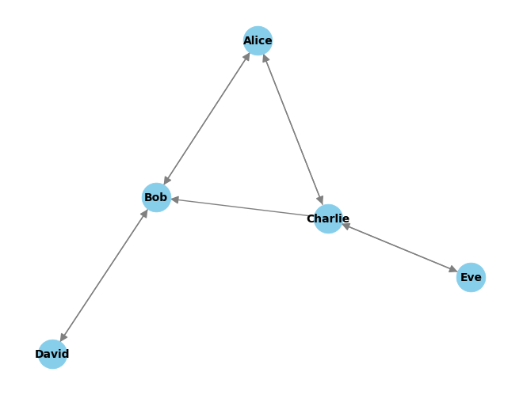

import networkx as nx
import matplotlib.pyplot as plt
# Sample data (replace this with your actual data)
collaborators = {
'Alice': ['Bob', 'Charlie'],
'Bob': ['Alice', 'David'],
'Charlie': ['Alice', 'Eve', 'Bob'],
'David': ['Bob'],
'Eve': ['Charlie']
}
# Create a directed graph
G = nx.DiGraph()
# Add nodes and edges based on the collaborators data
for collaborator, connections in collaborators.items():
G.add_node(collaborator)
for connection in connections:
G.add_edge(collaborator, connection)
# Visualize the graph
pos = nx.spring_layout(G) # You can try different layout algorithms
nx.draw(G, pos, with_labels=True, node_size=700, node_color="skyblue", font_size=10, font_color="black", font_weight="bold", edge_color="gray", linewidths=0.5, arrowsize=15)
# Display the graph
plt.show()